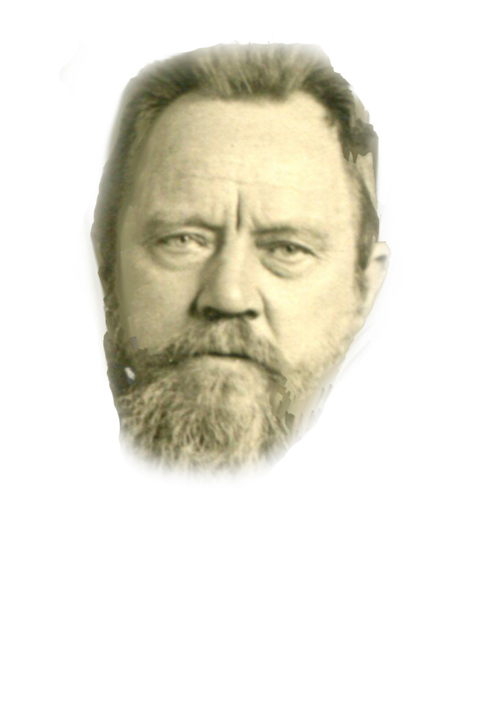

Nato il 26 marzo 1876 nell'Hannover, in Germania, si trasferiva poi con la famiglia in Iugoslavia e fatti i suoi studi ginnasiali e parte del liceo nel collegio dei Gesuiti di Traunik, entrava a vent'anni nell’ Istituto Comboniano. Nel novembre 1902 fu ordinato sacerdote e mandato tra gli Schilluk, ove lavorò per trent'anni con ammirabile dedizione; facendosi tutto a tutti, acquistò fra essi affetto e popolarità singolari. Oltre ad altre opere minori, compì, in questi ultimi anni in cui la salute lo obbligò al grande sacrificio di lasciare la missione, la grammatica e il dizionario della lingua Schilluk. Soffrì immensamente quando, per cause estranee all'Istituto, la missione di Kodok fu tolta ai comboniani. Morì di polmonite nella casa comboniana di Roma il 21 gennaio del 1939. Fu religioso osservante; curò assai l'intimità con Dio e seppe nascondere sotto una piacevole bonomia un bell'ingegno ed un gran cuore.
I suoi lavori: Grammatica della lingua Schilluk, con l'aggiunta di un Piccolo Dizionario Italiano-Schilluk, Cairo 1931. Nel 1933 ne usci l'edizione Inglese, Schilluk Grammar, ecc. Miss. Afr. Verona,
